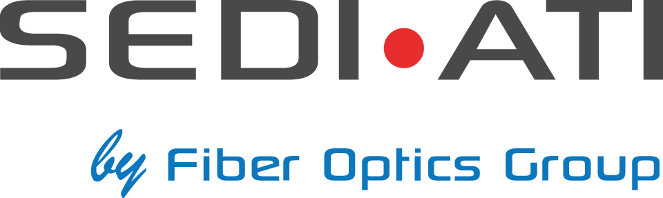
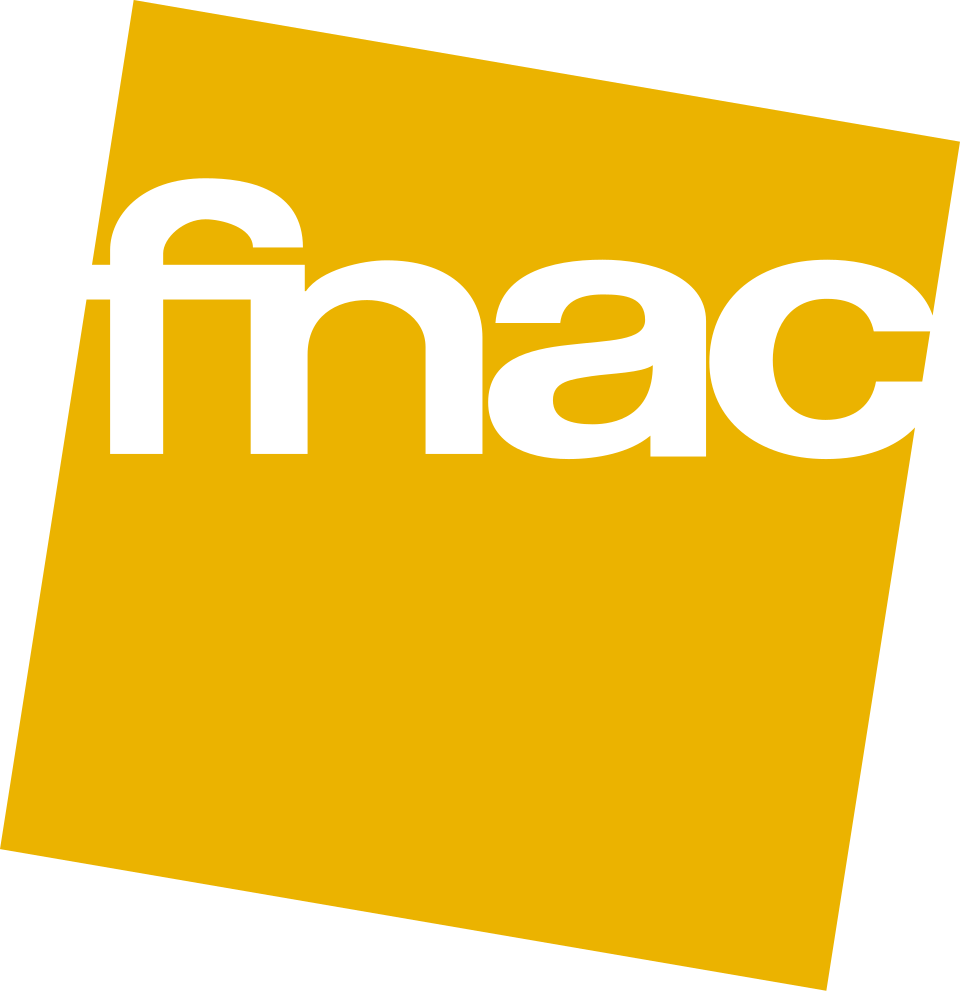
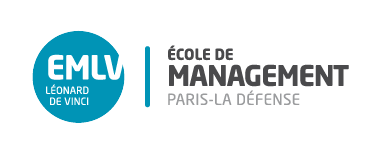
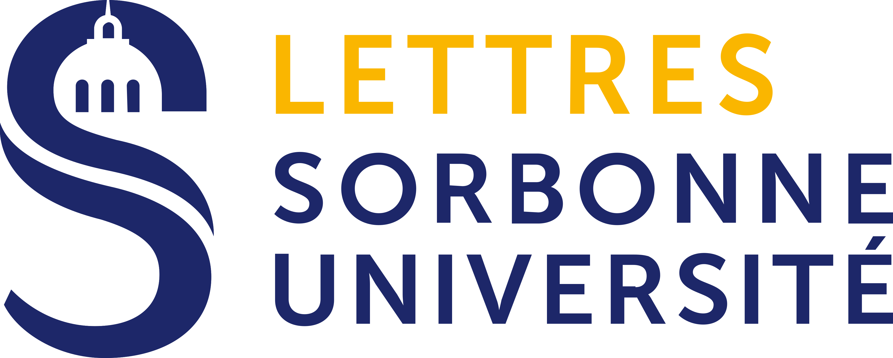

Expériences, compétences
& projets pro
Mon parcours en marketing, communication et événementiel.
Expériences professionnelles
Mon parcours
Assistant Marketing, Communication & Événementiel

SEDI-ATI Fibre Optique — Évry-CourcouronnesCréation de visuels, planification et analyse des performances LinkedIn et site web (KPIs). Extraction et analyse des données via ACT! CRM. Suivi des contenus digitaux. Organisation et logistique d'événements internes et externes.
Réceptionniste
B&B Hôtel — Meudon (92)
Gestion relation client. LEANPMS et CRM. Programme B&Me. Reporting. E-réputation.
Assistant aux opérations
 Costco — Villebon-sur-Yvette (91)
Costco — Villebon-sur-Yvette (91)
Vente Multimédias. Gestion stocks, réassort, contrôle qualité.
Animateur et surveillant d’études
🏫 École David Reigner — Verrières-le-Buisson (91)
Encadrement enfants, aide aux devoirs, jeux thématiques.
Conseiller de vente

Fnac — Boulogne-Billancourt (92)Conseils clients, argumentaire de vente.
Compétences clés
Savoir-faire & outils
Marketing & Com
- Plan de communication multi-canaux
- Stratégie de marque
- Marketing local & jeux-concours
- Veille concurrentielle & benchmark
- E-réputation
- Analyse de marché & SWOT
- Reporting & performance
Outils & Logiciels
- Pack Office, Excel, Google Sheets
- Canva, CapCut, Suite Adobe
- CRM (Act!, LEANPMS)
- E-mailing & réseaux sociaux
- Bases HTML/CSS/JS
IA & Automatisation
- ChatGPT, Claude, Gemini
- Automatisation de workflows
- Contenus assistés IA
- Dév web assisté IA
Soft Skills
- Travail en équipe & adaptabilité
- Apprentissage autodidacte
- Gestion du stress & autonomie
- Orientation client & résultats
Langues
- Anglais — B2
- Espagnol — B1
Projets professionnels
Réalisations en entreprise et études
Communication & Événementiel
SEDI-ATI — Projet Marketing
Projet de communication marketing et événementiel en alternance.
Voir le détailRecherche académique
Mémoire de Bachelor
Mémoire de fin d’études du Bachelor Marketing à l’INSEEC.
Voir le détailÉvénementiel
Organisation d'événements — SEDI-ATI
Séminaires professionnels, événements internes et externes en alternance.
Voir le détailSimulation d’entreprise
Business Game
Simulation de gestion d’entreprise en équipe et compétition.
Voir le détailFormation
Parcours académique
2026 — 2028 (prévu)
Master Double Diplôme — Digital Marketing & Data Analytics

EMLV & IIMProchaine étape2025 — 2026
Bachelor Marketing, Communication & Événementiel
INSEEC Bachelor — Paris
En alternance chez SEDI-ATI · Spécialisation : Événementiel
En cours2023 — 2025
BTS Tourisme
ESG Tourisme — Paris
Obtenu2021 — 2023
Licence L.E.M.A

Sorbonne Paris IV — ParisLettres, Édition, Médias et Audiovisuel.
2018 — 2021
Baccalauréat Général
🏫 Lycée Parc de Vilgénis — Massy (91)
Obtenu